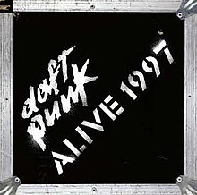

Ingredients List
- Musique
- Revolution 909
- Fresh
- Short Circuit
- Daftendirekt
- Da Funk
- Ten Minutes Of Funk
- Rollin’ & Scratchin’
- WDPK 83.7 FM
- Revolution 909 (Wdpk Mix)
- Pulsar
- Alive
- Can You Feel It
- Burnin’
- Around The World / The Chase
- Teachers
- Rock’n Roll / Oh Yeah / You Can’t Hide From Your Bud
Taste Our Coffee Here: